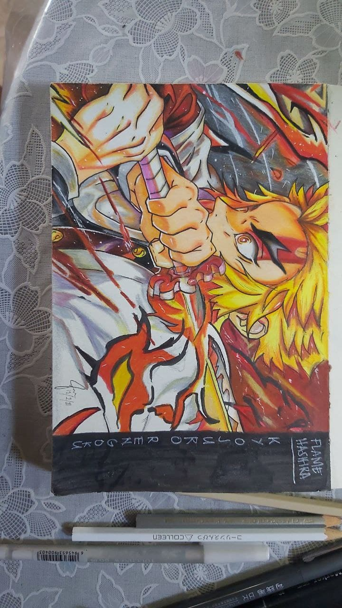

"Daijōbu desho. Datte Kimi yowai mon."
One of the best lines that Gojo Satoru has ever said in Jujutsu Kaisen. Gojo Satoru is
a teacher at Jujutsu Kaisen High and a special Jujutsu Sorcerer. Gojo wears a black blindfold to cover his eyes because using
his eyes too much would tire himn out quickly. His jujutsu is called Six Eyes, which has been passed down from his family
bloodline.

"Umai!"
Kyojuro Rengoku was a major supporting character of Demon Slayer: Kimetsu no Yaiba and a major character in the Mugen Train Arc.
He was a Demon Slayer of the Demon Slayer Corps and the former Flame Hashira.

When Naruto watchers first saw Rock Lee, he defeated Sasuke and knocked out Naruto quickly. But later surprised them more with
his intense speed after Might Guy telling him to remove his ankle weights. Sadly, Rock Lee was defeated by Gaara of the sand
by unleashing Shukaku, the One Tailed beast.